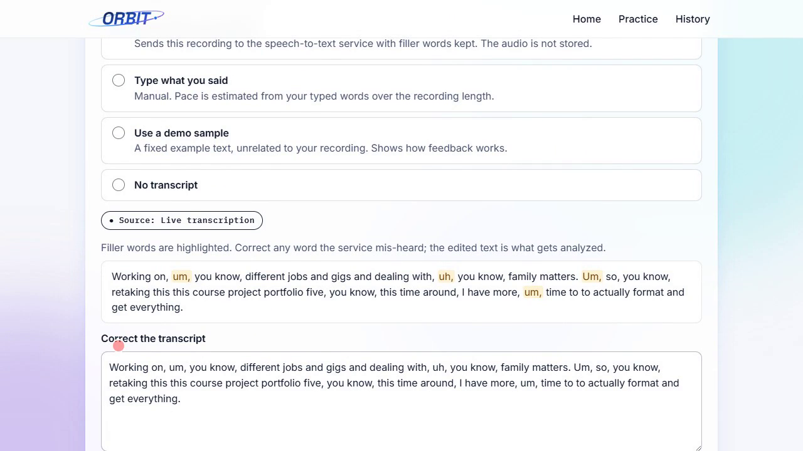
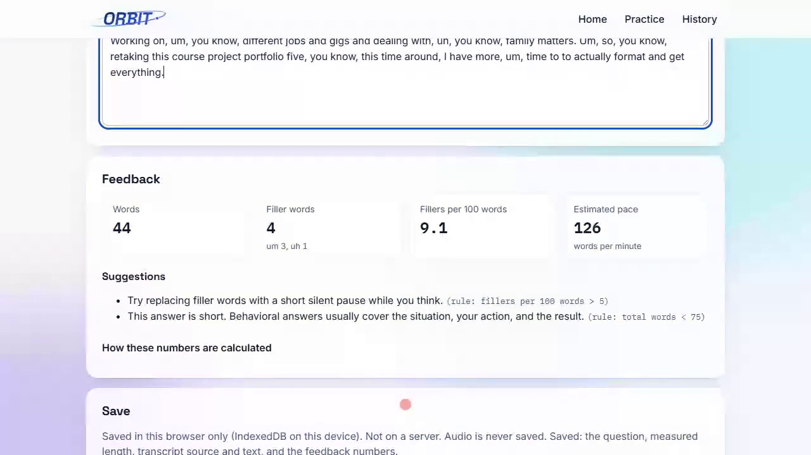

Entry 004 · Sprint 1
Keeping the "um": Sprint 1 of Interview Orbit
Sprint 1 is built and merged. Five of its six tasks are done and on the development branch, and the sixth is the one I care about most, so I'll be honest about where it stands at the end.
The problem: you can't count what was never written down
Interview Orbit gives feedback on how you answer, and one of the clearest signals is filler words: how often you say "um" and "uh." In my design review, my instructor pointed out the flaw in my first version. If the user types what they said, the fillers disappear. Nobody types "um." So a typed transcript can't measure the one thing I most wanted to measure.
The fix sounds simple: transcribe the recording automatically. The catch is that many speech-to-text services clean fillers out by default, because most people want tidy text. Deepgram, for example, only keeps them when you turn on a specific setting. For this app, tidy text is the wrong answer.
The solution: a live transcript that keeps the fillers
Sprint 1 built the pipeline end to end:
- An ASP.NET Core 9 API with a health check and eight passing tests.
- Continuous integration on every pull request. To prove it actually guards the branch, I opened a pull request with a test that fails on purpose. The check went red and GitHub blocked the merge. I closed it, and development now requires both checks to pass.
- A transcription endpoint that sends the recording to Deepgram with filler words turned on, rejects uploads over 180 seconds or 10 MB, and never writes audio to disk. The recording lives in memory for the length of the request and then it's gone.
- A transcript review screen that marks the result as a live transcript, highlights every filler, and lets you fix anything the service misheard. Whatever you edit is exactly what gets analyzed.
- A golden answer set: 20 labeled practice answers, including two my instructor asked for: a polished answer that's off-topic, and an on-topic answer full of fillers. The app has to handle both correctly. All 87 unit tests pass.


What broke along the way
Three things I didn't expect. An end-to-end test was flaky because the recording timer can skip a second when the computer is busy, so I changed it to wait for at least that many seconds instead of an exact number. My first "no audio on disk" test passed even before the fix existed, which meant it wasn't testing anything, so I rewrote it to check the disk while the request is still running. And the .NET 10 SDK on my machine created a new solution file format, so I pinned the project to the .NET 9 SDK.
The second one taught me the most. A test that can't fail isn't protecting you. Now I make each new test fail at least once before I trust it.
What's still open
The sixth task is the comparison itself: is Deepgram the right service, or is AssemblyAI better at catching fillers? I recorded five practice answers, and both services are connected and working. The decision has to come from my own hand count of every "um" and "uh" in those recordings, not from either service grading itself. That count and the decision record are what I'm finishing now, and they'll be the next entry.
Sprint 2 starts this week: a Technical question category, rubrics per category, a warning when a transcript was typed by hand, and clearer labels for which numbers are measured and which are guidelines.
Sources
- Deepgram. (n.d.). Filler Words. Deepgram Documentation.
- MDN Web Docs. (n.d.). 413 Content Too Large.
- Interview Orbit source, development branch: github.com/bthoreau88/interview-orbit.